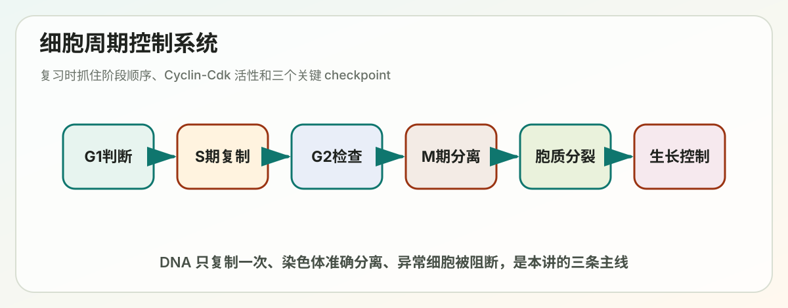

Lecture 15
Lecture 15: Cell Cycle（细胞周期）

> 覆盖范围：cell cycle overview、cell cycle control system、S phase、mitosis、cytokinesis、cell division and cell growth control。 > 复习目标：能把“细胞如何只复制一次 DNA、如何准确分离染色体、如何决定是否继续分裂”串成一条机制链。
---
本讲主线
细胞周期的核心任务很简单：先把细胞内容物和遗传信息复制一份，再把它们准确分给两个子细胞。难点在于这件事必须按顺序发生，而且一旦出错会造成突变、染色体非整倍体、发育异常或癌症。
一句话框架：
G1 判断环境和细胞状态
-> S phase 复制 DNA 且每个 origin 只启动一次
-> G2 检查复制是否完成和 DNA 是否受损
-> M phase 凝缩染色体、组装纺锤体、分离姐妹染色单体
-> Cytokinesis 把一个细胞分成两个细胞周期控制系统的本质是：Cyclin-Cdk 活性按时间顺序升降，checkpoint 负责在错误未修复前踩刹车，蛋白降解系统负责让过程不可逆地向前推进。
---
考前速记版
| 阶段 | 核心事件 | 关键问题 |
|---|---|---|
| G1 | 生长、感受营养和 mitogens、决定是否进入周期 | 该不该分裂？ |
| S phase | DNA replication、histone synthesis、centrosome duplication | DNA 是否只复制一次？ |
| G2 | 检查 DNA replication 和 DNA damage | 能不能进 M phase？ |
| M phase | 染色体凝缩、核膜破裂、纺锤体组装、染色体分离 | 染色体能否平均分配？ |
| Cytokinesis | contractile ring 收缩，细胞质分裂 | 两个子细胞如何真正分开？ |
| G0 | 暂时或长期退出细胞周期 | 是否保持静息或分化状态？ |
最常考的三个控制点：
1. G1/S transition / restriction point：外界 mitogen、营养、细胞大小、DNA damage 决定是否进入 S phase。 2. G2/M transition：DNA 是否复制完成、是否有损伤，决定能否进入 mitosis。 3. Metaphase-to-anaphase transition：所有染色体是否正确连接 spindle，决定能否分离姐妹染色单体。
---
I. Cell cycle overview
1.1 细胞周期解决的两个任务
细胞分裂不是只把细胞“一切两半”。它必须完成两个高度协调的任务：
- duplication of cell contents：DNA、蛋白质、膜、细胞器等要增加。
- division into two daughter cells：遗传物质和细胞内容物要被分配给两个子细胞。
如果复制和分裂不同步，就会出问题：
- DNA 没复制完就分裂，子细胞缺失遗传信息。
- DNA 重复复制，产生基因组不稳定。
- 染色体未正确连接纺锤体就分离，产生 aneuploidy。
- 细胞生长不足就分裂，子细胞过小。
1.2 四个经典阶段
| 阶段 | 中文理解 | 主要事件 |
|---|---|---|
| G1 | 第一间期 | 生长、外界信号判断、准备 DNA 合成 |
| S | 合成期 | DNA replication 和 histone synthesis |
| G2 | 第二间期 | 检查 DNA 复制完成度和损伤，准备有丝分裂 |
| M | 分裂期 | mitosis + cytokinesis |
有些细胞会进入 G0：
- 暂时退出周期，之后可被信号重新激活，例如淋巴细胞。
- 长期退出并分化，例如多数神经元和骨骼肌细胞。
- 进入 senescence，不再分裂但仍有代谢活动。
1.3 研究细胞周期的常用方法
课件提到几类常用方法：
| 方法 | 能回答的问题 |
|---|---|
| 显微镜观察 | 细胞形态、染色体凝缩、纺锤体、胞质分裂 |
| BrdU / EdU incorporation | 哪些细胞正在进行 DNA synthesis |
| Flow cytometry DNA content | 根据 DNA 含量区分 G1、S、G2/M |
| Cell cycle synchronization | 让细胞群体处在相近阶段，方便分析 |
| Yeast genetics | 用 cdc mutants 找细胞周期控制基因 |
DNA content 的基本判断：
- G1：2N DNA content。
- S phase：介于 2N 和 4N 之间。
- G2/M：4N DNA content。
1.4 Yeast mutants 为什么重要
酵母遗传学帮助科学家找到许多 cell division cycle genes，也就是 cdc genes。典型贡献包括：
- Lee Hartwell：用 budding yeast 找到多种 cdc mutants 和 checkpoint 概念。
- Paul Nurse：用 fission yeast 研究 cdc2 等关键细胞周期基因。
- Tim Hunt：发现 cyclins 的周期性积累和降解。
这些工作说明：细胞周期不是简单计时器，而是由高度保守的分子开关控制。
---
II. The cell cycle control system
2.1 控制系统的基本逻辑
细胞周期控制系统像一组顺序开关。每一步都要满足两个条件：
1. 上一步已经完成。 2. 当前环境允许继续前进。
核心分子是 Cyclin-Cdk complexes：
- Cdk 是 kinase，蛋白水平相对稳定。
- Cyclin 周期性合成和降解。
- Cyclin 结合 Cdk 后改变 Cdk 构象，使其具备底物特异性和活性。
所以“周期性”主要来自 cyclin，而“磷酸化执行能力”来自 Cdk。
2.2 Cyclin-Cdk 的主要类型
| 复合体 | 活跃阶段 | 主要功能 |
|---|---|---|
| G1-Cdk | G1 | 响应 mitogens，帮助细胞通过 restriction point |
| G1/S-Cdk | late G1 | 推动进入 S phase |
| S-Cdk | S phase | 启动 DNA replication，防止 origin 重新许可 |
| M-Cdk | G2/M 和 M phase | 触发 mitosis，促进染色体凝缩、核膜破裂、纺锤体形成 |
记忆方式：
G1-Cdk 问“要不要分裂”
G1/S-Cdk 推门进入 S phase
S-Cdk 启动复制并防止重复复制
M-Cdk 触发 mitosis2.3 Cyclin-Cdk 如何被调控
Cyclin-Cdk 活性不是只由 cyclin 决定。主要调控层包括：
1. Cyclin synthesis：特定阶段合成特定 cyclin。 2. Cyclin degradation：ubiquitin ligase 介导降解，让阶段转换不可逆。 3. Activating phosphorylation：CAK 在 Cdk 上加激活性磷酸。 4. Inhibitory phosphorylation：Wee1 给 Cdk 加抑制性磷酸。 5. Dephosphorylation：Cdc25 去掉抑制性磷酸，激活 Cdk。 6. CKI binding：Cdk inhibitor proteins 直接抑制 Cyclin-Cdk。
2.4 CKI：Cdk inhibitor proteins
CKI 是细胞周期刹车。典型例子：
- p27：抑制 G1/S-Cdk 和 S-Cdk。
- p21：常由 p53 上调，用于 DNA damage 后阻止细胞继续周期。
如果 DNA 受损，p53 上调 p21，p21 抑制 Cyclin-Cdk，细胞停在 G1/S 或 G2/M 附近，给修复争取时间。
2.5 SCF 和 APC/C：让细胞周期单向前进
两个重要 ubiquitin ligases：
| 复合体 | 主要作用 |
|---|---|
| SCF | 降解 CKI 等蛋白，推动 G1/S transition |
| APC/C | 降解 securin 和 M-cyclin，推动 metaphase-to-anaphase transition 和退出 mitosis |
APC/C 的关键作用：
- 降解 securin，释放 separase。
- separase 切割 cohesin，让姐妹染色单体分离。
- 降解 M-cyclin，让 Cdk 活性下降，细胞退出 mitosis。
---
III. S phase
3.1 S phase 的核心挑战
DNA replication 有两个硬要求：
1. 每一段 DNA 都必须被复制。 2. 每个 origin 在一个细胞周期中只能启动一次。
如果 origin 没启动，会出现缺失复制；如果 origin 重复启动，会造成基因组不稳定。
3.2 Origin licensing：只复制一次的关键
在 G1，复制起点被“许可”：
ORC 结合 origin
-> Cdc6 / Cdt1 招募
-> MCM helicase 装载
-> pre-replicative complex 形成进入 S phase 后：
S-Cdk 和 DDK 激活 licensed origins
-> MCM helicase 启动
-> DNA replication begins同时，S-Cdk 会阻止新的 licensing 发生。这样同一个 origin 在 S phase 不能重新装载 MCM，因此不会重复复制。
3.3 防止 rereplication 的几层机制
| 机制 | 作用 |
|---|---|
| S-Cdk 磷酸化 licensing factors | 阻止 ORC/Cdc6/Cdt1 重新装载 MCM |
| Cdc6 降解或核输出 | 防止新 pre-RC 形成 |
| Geminin 抑制 Cdt1 | 抑制 licensing |
| M phase 结束后 Cdk 活性下降 | 下一轮 G1 才能重新 licensing |
记忆点：licensing 只能在低 Cdk 活性的 G1 发生；firing 发生在高 S-Cdk 活性的 S phase。
3.4 S phase 还发生什么
除了 DNA replication，S phase 还包括：
- histone synthesis，用来包装新复制的 DNA。
- chromatin reassembly，包括复制后的组蛋白修饰恢复。
- sister chromatid cohesion，姐妹染色单体被 cohesin 连接。
- centrosome duplication，为后续 spindle assembly 做准备。
---
IV. Mitosis
4.1 Mitosis 的阶段
| 阶段 | 主要事件 |
|---|---|
| Prophase | 染色体凝缩，centrosomes 分离，spindle 开始形成 |
| Prometaphase | 核膜破裂，microtubules 捕获 kinetochores |
| Metaphase | 染色体排列在 metaphase plate |
| Anaphase | sister chromatids 分离并移向两极 |
| Telophase | 核膜重建，染色体去凝缩 |
Mitosis 的目标是把复制后的姐妹染色单体准确分到两个细胞核中。
4.2 M-Cdk 触发 mitosis
M-Cdk 活化后会推动多种 mitotic events：
- 磷酸化 condensins，促进 chromosome condensation。
- 磷酸化 nuclear lamins，导致 nuclear envelope breakdown。
- 调控 microtubule-associated proteins，促进 spindle assembly。
- 改变 Golgi、ER 等膜系统组织。
M-Cdk 的激活具有正反馈：
M-Cdk 激活 Cdc25
M-Cdk 抑制 Wee1
-> 更多 M-Cdk 被激活这让细胞能迅速、同步地进入 mitosis。
4.3 Spindle 和 kinetochore
Spindle 由 microtubules 组成，主要有三类：
| Microtubule | 功能 |
|---|---|
| Kinetochore microtubules | 连接染色体 kinetochore，牵引染色体 |
| Interpolar microtubules | 两极之间互相重叠，帮助 spindle elongation |
| Astral microtubules | 连接细胞皮层，帮助定位 spindle |
Kinetochore 是染色体 centromere 区域形成的蛋白复合体，负责连接 spindle microtubules。
4.4 Metaphase-to-anaphase transition
姐妹染色单体由 cohesin 连接。只有当所有染色体都正确双向连接 spindle 后，细胞才允许进入 anaphase。
关键步骤：
所有 kinetochore 正确连接并产生张力
-> spindle assembly checkpoint 关闭
-> APC/C-Cdc20 激活
-> securin 被降解
-> separase 被释放
-> cohesin 被切割
-> sister chromatids 分离APC/C 同时降解 M-cyclin，使 M-Cdk 活性下降，帮助退出 mitosis。
4.5 Spindle assembly checkpoint
Spindle assembly checkpoint 监控 kinetochore 是否都正确连接 microtubules。
如果还有未连接或错误连接的 kinetochore：
- Mad/Bub 等 checkpoint proteins 抑制 APC/C-Cdc20。
- securin 不被降解。
- separase 不能激活。
- anaphase 被阻止。
这个 checkpoint 对防止 aneuploidy 非常重要。
---
V. Cytokinesis
5.1 动物细胞的 contractile ring
动物细胞 cytokinesis 依赖 actin 和 myosin II 形成 contractile ring。
过程：
1. Anaphase 后期，细胞赤道处指定 cleavage plane。 2. RhoA 在赤道皮层被激活。 3. actin filaments 和 myosin II 组装成 contractile ring。 4. myosin II 收缩 actin ring，形成 cleavage furrow。 5. 细胞膜不断内陷，最终通过 abscission 分开两个子细胞。
5.2 Cleavage furrow 的位置如何确定
Cleavage furrow 通常形成在 spindle 中央。spindle 给细胞皮层提供空间信息：
- astral microtubules 影响皮层张力。
- central spindle 促进 RhoA 在赤道激活。
- RhoA 激活后促进 actin-myosin ring 组装。
所以 cytokinesis 不是随机切，而是由 mitotic spindle 指定切割位置。
5.3 植物细胞的 cell plate
植物细胞有坚硬细胞壁，不能像动物细胞一样用 cleavage furrow 向内收缩。植物细胞通过 Golgi-derived vesicles 在中央形成 cell plate，再逐渐扩展并与原有细胞壁融合。
---
VI. Control of cell division and cell growth
6.1 细胞为什么需要外界信号
多细胞生物中的细胞不能只根据自己内部状态分裂。它们还要听组织层面的指令：
- 是否有足够 mitogens。
- 是否有营养和能量。
- 是否有生存信号。
- 是否贴附在正确 ECM 上。
- 周围细胞密度是否允许继续增殖。
如果细胞脱离这些控制仍持续分裂，就接近癌变逻辑。
6.2 Mitogens
Mitogens 是促进细胞进入 cell cycle 的外界信号。课件提到许多例子，例如 EGF、FGF、NGF、erythropoietin 等。
典型通路：
Mitogen
-> receptor tyrosine kinase
-> Ras-MAPK pathway
-> Myc 等转录因子
-> G1 cyclins 表达
-> G1-Cdk / G1/S-Cdk 活化
-> Rb 被磷酸化
-> E2F 被释放
-> S phase genes 表达6.3 Rb-E2F restriction point
Rb 是 G1/S transition 的重要抑制器。
无 mitogen 时：
Rb 结合 E2F
-> E2F 不能激活 S phase genes
-> 细胞停在 G1有 mitogen 时：
G1-Cdk / G1/S-Cdk 磷酸化 Rb
-> Rb 释放 E2F
-> E2F 激活 DNA replication genes 和 S-cyclin genes
-> 细胞通过 restriction point通过 restriction point 后，细胞对外界 mitogen 的依赖降低，会更自主地完成这一轮周期。
6.4 DNA damage checkpoint
DNA damage 后，细胞会停下来修复。
经典路径：
DNA damage
-> ATM / ATR
-> Chk1 / Chk2
-> p53 stabilization
-> p21 transcription
-> Cyclin-Cdk inhibition
-> cell cycle arrest如果损伤修复不了，p53 还可以激活 apoptosis 相关基因，让细胞死亡，避免把突变传给子细胞。
6.5 细胞大小和营养
细胞分裂前需要有足够质量和能量。细胞生长主要受营养、mTOR、PI3K-Akt、Myc 等调控。
关键逻辑：
- cell growth 指细胞质量增加。
- cell division 指细胞数量增加。
- 两者必须协调，否则会产生异常大小的细胞。
6.6 Contact inhibition 和 anchorage dependence
正常细胞常受到两类组织环境限制：
- Contact inhibition：细胞密度过高时停止增殖。
- Anchorage dependence：许多细胞必须贴附 ECM 才能存活和分裂。
癌细胞常丧失这些限制，因此可以在高密度、低贴附甚至软琼脂中继续生长。
---
常考比较
G1/S checkpoint vs G2/M checkpoint vs spindle checkpoint
| Checkpoint | 检查什么 | 失败后风险 |
|---|---|---|
| G1/S | DNA damage、细胞大小、营养、mitogens | 带损伤进入复制，突变累积 |
| G2/M | DNA 是否复制完成、是否有损伤 | 未复制完或受损 DNA 进入 mitosis |
| Spindle checkpoint | kinetochore 是否正确连接 spindle | 染色体错误分离，aneuploidy |
Cyclin-Cdk 调控答题套路
遇到 cell cycle control 题，可以按这六层写：
1. cyclin 合成。 2. cyclin 降解。 3. Cdk 激活性磷酸化。 4. Cdk 抑制性磷酸化。 5. Cdc25 / Wee1 调节。 6. CKI 抑制。
DNA replication once per cycle
G1: low Cdk activity allows origin licensing
S phase: S-Cdk fires origins
S/G2/M: high Cdk activity prevents re-licensing
M exit: Cdk activity drops, next G1 can license again---
自测题
1. 为什么细胞必须把 DNA replication 和 mitosis 严格排序？ 2. Flow cytometry 中 2N、2N-4N、4N DNA content 分别对应哪些阶段？ 3. Cyclin 和 Cdk 在细胞周期控制中分别提供什么？ 4. 为什么 origin licensing 只能发生在 G1？ 5. APC/C 降解 securin 和 M-cyclin 分别产生什么后果？ 6. Spindle assembly checkpoint 如何防止 aneuploidy？ 7. Rb-E2F 通路如何把 mitogen 信号转化为 S phase gene expression？ 8. DNA damage 后 p53-p21 如何阻止细胞继续分裂？
---
一页总结
Cell cycle 的复习主线是：Cyclin-Cdk 提供阶段性推进力，checkpoint 提供质量控制，SCF/APC-C 提供不可逆转换，Rb/E2F 和 p53/p21 把外界增殖信号与内部 DNA 状态接入周期决策。 能把这几条线串起来，就能解释大多数细胞周期题。